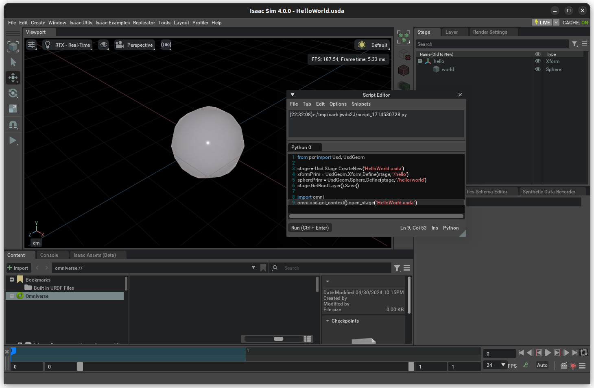

OpenUSD Fundamentals#
The language used in Isaac Sim to describe the robot and its environment is the Universal Scene Description (USD).
Why USD?#
USD enables seamless interchange of 3D content among diverse content creation apps with its rich, extensible language. With concepts of layering and variants, it’s a powerful tool that enables live collaboration on the same asset and scene. And when properly used, it permits working on assets without overwriting and erasing someone else’s work.
USD provides a text-based format for direct editing (.usda). For higher performance and space optimization, there is a binary-encoded format (.usd). All aspects of USD can be accessed through coding in C++ or Python.
APIs are available for you to set up a scene or tune a robot directly in USD, but, typically it is not necessary to use them.
Hello World#
Let’s start by creating a basic USD file from code:
xformPrim = UsdGeom.Xform.Define(stage, "/hello")
spherePrim = UsdGeom.Sphere.Define(stage, "/hello/world")
# stage.GetRootLayer().SaveAs('/path/to/hello_world.usda')
print(stage.GetRootLayer().ExportToString())
Uncomment the line stage.GetRootLayer().SaveAs('/path/to/hello_world.usda') and replace /path/to/ with the desired save folder, you can execute this code in the script editor (Window > Script Editor) in Isaac Sim, and it yields the following USD file:
#usda 1.0
def Xform "hello"
{
def Sphere "world"
{
}
}
This example contains a couple of powerful things we can take away from it:
Type: Elements in USD (called Prims) have a defined type. In the case of
hello, it is of typeXform, a type used everywhere, and it defines elements that contain a transform in the world.Worldis of type Sphere, which represents a primitive geometry.Composition: Prims can have nested prims. These nested prims are, for all effects, fully defined elements, with their own attributes.
Introspection: If uncommented, the line
generic_spherePrim = stage.DefinePrim('/hello/world_generic', 'Sphere')would yield a sphere just like the/hello/world. Prim types can be defined directly through their schema name.Namespaces: Both Xform and Sphere are part of the standard pxr namespace UsdGeom, a set of types that represent geometry elements in the scene.
You can open this USD file in Isaac Sim in the script editor window with:
import omni
omni.usd.get_context().open_stage("/path/to/hello_world.usda")
{kind=link}

{kind=link}
{kind=link}
Further Reading#
For a complete tutorial on USD, see the openUSD tutorials. With a few tweaks, as shown on the basic examples above, these tutorials can be run from the Script editor or in the Isaac Python shell.
For more in-depth content, see guided learning content or the independent learning.
Units in USD#
By default, Isaac Sim USD uses the following default units:
Unit |
Default |
|---|---|
Distance |
meters (m) |
Time |
seconds (s) |
Mass |
Kilogram (kg) |
Angle |
Degrees |
For more Isaac Sim conventions, see Isaac Sim Conventions.
There are cases when assets coming from different apps follow a different standard. By default, Isaac Sim has enabled the Metrics Assembler, which automatically converts the asset scale for the distance unit, mass unit, and Up Axis.
For more details about how USD handles units, see Units in USD.
Useful USD Snippets#
Here are some useful snippets that can be useful when dealing with USD in code. These snippets assume that stage and prim: are respectively pxr.UsdStage and pxr.UsdPrim types, and if any additional type is used, the necessary imports are included in the snippet.
Traversing Stage or Prim#
# For stage traversal there's a built-in method:
for a in stage.Traverse():
do_something(a)
# For prim, it's not the same method though
from pxr import Usd
prim = stage.GetDefaultPrim()
for a in Usd.PrimRange(prim):
do_something(a)
Working with Multiple Layers#
from pxr import Sdf
# Get References to all layers
root_layer = stage.GetRootLayer()
session_layer = stage.GetSessionLayer()
# Add a SubLayer to the Root Layer
additional_layer = layer = Sdf.Layer.FindOrOpen("my_layer.usd")
root_layer.subLayerPaths.append(additional_layer.identifier)
# Set Edit Layer
# Method 1
with Usd.EditContext(stage, root_layer):
do_something()
# Method 2
stage.SetEditTarget(additional_layer)
# Make non-persistent changes to the stage (won't be saved regardless if you call stage.Save)
with Usd.EditContext(stage, session_layer):
do_something()
Converting Transform Pose in Position, Orient, Scale#
Note
You can use this to create a set_pose method that receives a transform and applies to the prim.
import omni.usd
from pxr import Gf, Usd, UsdGeom
def convert_ops_from_transform(prim: Usd.Prim):
# Get the Xformable from prim
xform = UsdGeom.Xformable(prim)
# Gets local transform matrix - used to convert the Xform Ops.
pose = omni.usd.get_local_transform_matrix(prim)
# Compute Scale
x_scale = Gf.Vec3d(pose[0][0], pose[0][1], pose[0][2]).GetLength()
y_scale = Gf.Vec3d(pose[1][0], pose[1][1], pose[1][2]).GetLength()
z_scale = Gf.Vec3d(pose[2][0], pose[2][1], pose[2][2]).GetLength()
# Clear Transforms from xform.
xform.ClearXformOpOrder()
# Add the Transform, orient, scale set
xform_op_t = xform.AddXformOp(UsdGeom.XformOp.TypeTranslate, UsdGeom.XformOp.PrecisionDouble, "")
xform_op_r = xform.AddXformOp(UsdGeom.XformOp.TypeOrient, UsdGeom.XformOp.PrecisionDouble, "")
xform_op_s = xform.AddXformOp(UsdGeom.XformOp.TypeScale, UsdGeom.XformOp.PrecisionDouble, "")
xform_op_t.Set(pose.ExtractTranslation())
xform_op_r.Set(pose.ExtractRotationQuat().GetNormalized())
xform_op_s.Set(Gf.Vec3d(x_scale, y_scale, z_scale))